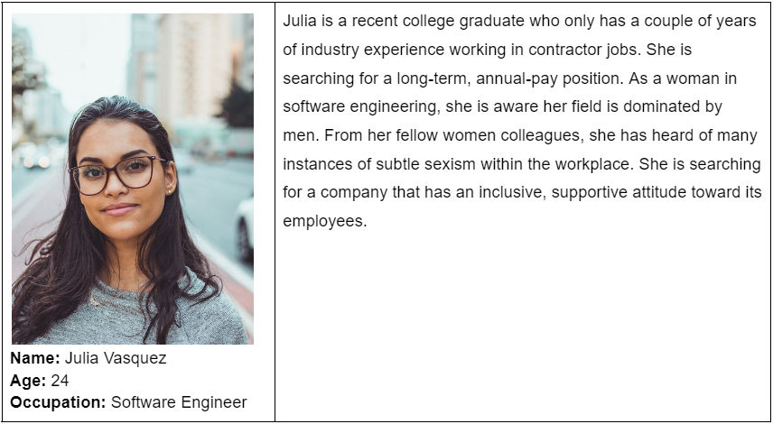
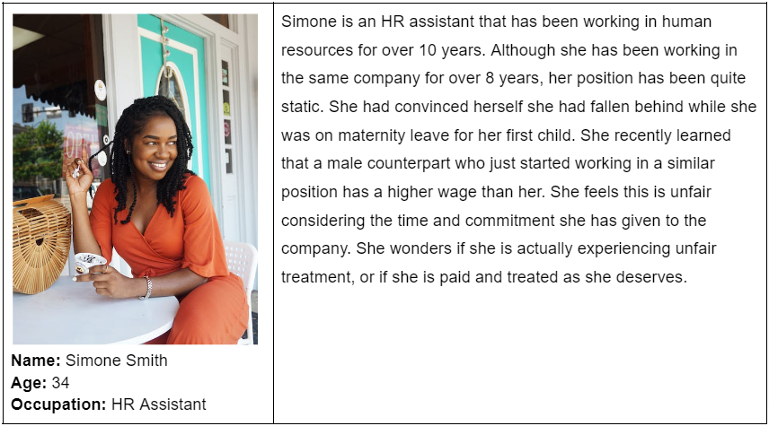
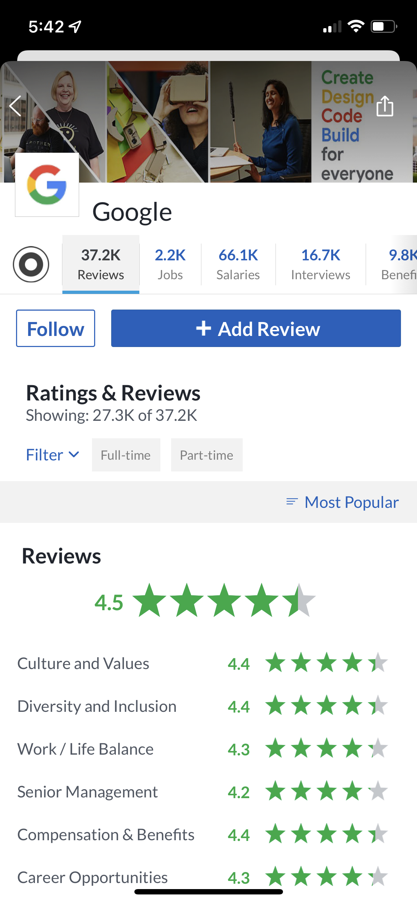
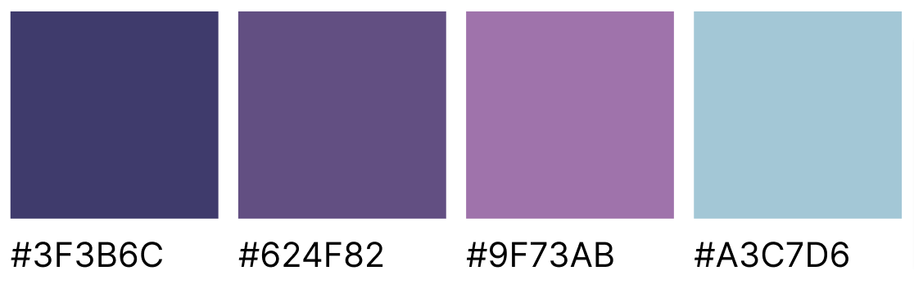
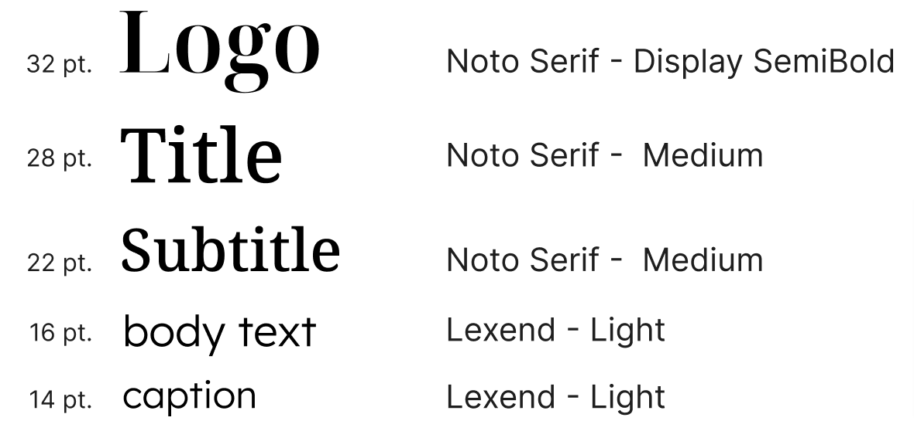

Overview
82 Cents, named after the average amount women earned for every dollar that men earned in 2020, is an app that combats gender discrimination in the workplace. Women (including anyone who carries that gender identity) can leave ratings and reviews for a company based on their experiences working there. The app also features a ranked "Most Equitable Companies" list and a forums page where women can post questions or discuss their experiences regarding the workplace.
Target Audience and Personas
The target audience is split into two groups: job-seekers and support-seekers. The first group includes women who are looking for a job and want to understand the gender-discriminant attitudes within the workplace. An example persona is a 24 year-old software engineer named Julia Vasquez, who is searching for a long-term position after working a couple years as a contractor. Her field is dominated by men and she has heard about instances of subtle sexism from other female colleagues. She is searching for a company that has an inclusive, supportive attitude towards their employees. The second group includes women who have certain discriminatory experiences within a workplace and want to find out if others have similar experiences as well. An example persona is Simone Smith, who is a 34 year-old HR assistant who has been in this field for over 10 years. Although she had convinced herself that she had fallen behind in work during maternity leave, it seems like an unlikely reason to have held the same position for the past 8 years. She recently discovers that a male colleague has a much higher pay wage than her. She wonders if she is actually experiencing unfair treatment, or if she is paid and treated as she deserves.
 UX Research
Through competitive analysis, I compared two conceptually similar platforms: Glassdoor and Niche. Glassdoor provides information on jobs, company reviews, salary comparisons, and interview questions. Although the concept is similar, 82 Cents stands different from Glassdoor because it specifically targets women and provides gender discrimination-based information about companies, which Glassdoor lacks. Glassdoor has a clean and organized interface, but makes it almost impossible to enter the app unless the user logs in. This makes the information inaccessible, which is something I want to avoid in my app.
Niche, on the other hand, provides data, reviews, and insights on K-12, college, and graduate schools. It's rating scale is based on letter grades, which conceptually aligns well with its theme. The ratings are split into different categories, like academics, diversity, location, and campus. These individual ratings are averaged into an overall grade for the school. The separate rating categories are a great feature because they provide a more holistic understanding of the school rating.

Visual Design
Inspired by the apps that I studied, I decided on a professional feel with a friendly look using rounded features. In order to give the app a feminine touch, I used a variety of different purples as the main colors. I also used a pale blue as an accent color. I originally used Noto Serif in Display SemiBold for the branding and titles, but later changed the titles to a medium weight to increase readability. During feedback sessions, I learned that the contrasting thick and thin strokes of the display weight were difficult to read, especially as the font size decreased. I used Lexend, a sans serif font, for the body text.
 User Interface
The app contains several features: posting a review, creating a forum post, liking other forum posts, and deleting posts. After searching or clicking on a company, users are directed to the company's profile. From there, they can fill out a form to post a review. To create a forum post, the user must navigate to the forums tab. Here, they can like other posts or create their own. Users can manage their own activity through their profile page.
Revisions
Through user testing, I was able to observe how others approach my app. Users had a difficult time navigating through the app because, at the time, I had a lot of filler text rather than actual content. Managing post activity was also difficult because certain elements on the profile page did not look like buttons. To fix this issue, I would either add arrows to indicate that there is more content or add icons to give a more button-like appearance.
Summary
Through this project, I gained a lot more experience with Figma. This was my first time prototyping and I did not realize how complicated this process could get. Sometimes even the smallest features, like a sliding animation to indicate a post was added, require new frames and connections. I had fun experimenting with different transition types and how they can be used as microinteractions to convey messages. I still have a lot more to learn! Going forward, I want to learn more about animations and how they can make my prototypes stronger.